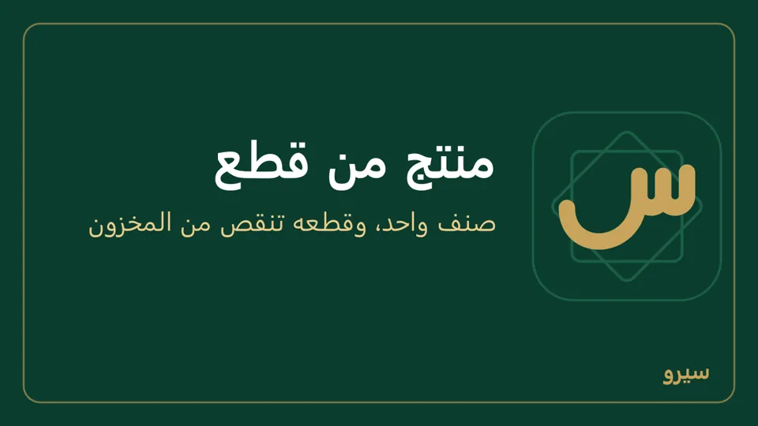
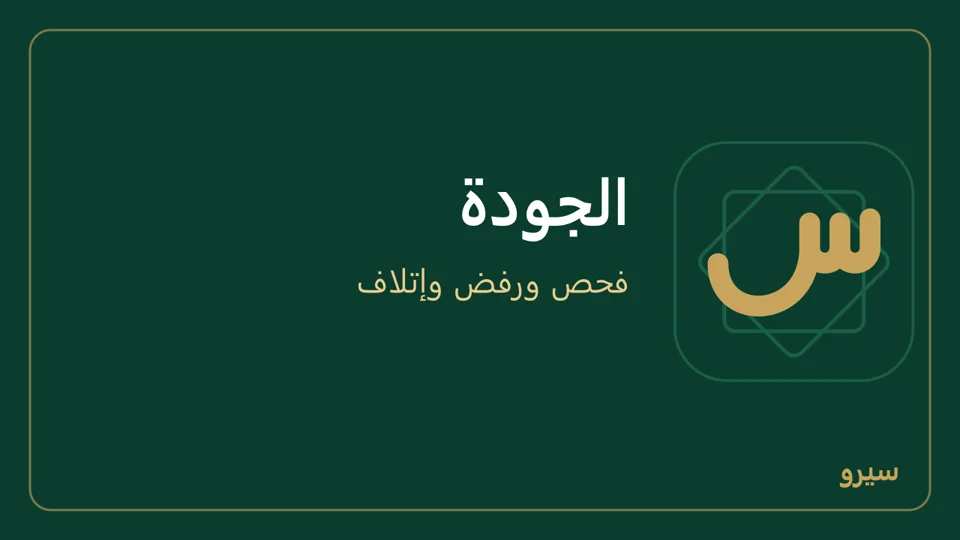

التصنيع والمنتجات المركّبة
لمن يبيع منتجاً مؤلفاً من قطع، أو عملاً لا صنفاً جاهزاً، أو يصنع منتجاً من مواد، أو يفكّ صنفاً إلى أجزاء.
- منتج مؤلف من قطع (قلم = جسم + غطاء)
- عمل حسب الطلب
- التصنيع والتفكيك
- كم أربح من المنتج؟
- الجودة: فحص ورفض وإتلاف
- الصيانة: الآلات والسيارات
منتج مؤلف من قطع (قلم = جسم + غطاء)
تبيع «قلم» في الفاتورة، وفي المخزون هو جسم وغطاء. سجّل القطع أصنافاً عادية، والقلم صنفاً بوصفة:
- أضف «جسم القلم» و«غطاء القلم» أصنافاً عادية، واشترِها كالعادة.
- أضف صنف «قلم» بسعر بيعه، وعلّم بلا مخزون (في خيارات متقدمة).
- من التصنيع والتفكيك ← قوائم المواد أنشئ قائمة للقلم: جسم 1، غطاء 1.
- بِع «قلم» من الفاتورة أو نقطة البيع: ينقص جسم وغطاء من المخزون وحدهما، وتكلفتهما هي تكلفة القلم في الربح.

كرتونة أو صحن من الصنف نفسه (كرتونة = 360 بيضة) ليست منتجاً مركّباً: استعمل الوحدات، فتُشترى بها أيضاً وتدخل المخزون. مرتجع القلم يعيد القطعتين إلى المخزون. وإن كنت تجمّع القلم مسبقاً وتخزّنه جاهزاً فاتركه صنفاً عادياً واستعمل أوامر الإنتاج. وقطعة في الوصفة تُحضَّر مسبقاً وتُخزَّن (عجينة بأمر إنتاج كل صباح) تخرج من المخزون نفسها عند البيع، لا موادها. وقطعة تُحضَّر عند كل بيع اجعلها بلا مخزون بوصفتها فتخرج موادها. قسم التصنيع لا يظهر؟ فعّله من الأقسام.
على الجوال: الوصفة من التصنيع ← قوائم المواد، ثم بِع القلم من فاتورة بيع أو بيع بالكاميرا كالعادة.
عمل حسب الطلب
- افتح فاتورة بيع جديدة واختر الزبون.
- في خانة الصنف اختر عمل حسب الطلب (اكتب الوصف) واكتب وصف العمل وسعره، مثل «تفصيل ثوب حسب القياس».
- في المواد المستعملة أضف ما استهلكه العمل من المستودع (قماش، خيطان، أزرار).
- اضغط حفظ. تخرج المواد من المخزون بتكلفتها، فيظهر ربح الفاتورة الحقيقي.
على الجوال: في فاتورة بيع اضغط عمل حسب الطلب واكتب الوصف والسعر، والمواد في المواد المستعملة (تخرج من المخزون بتكلفتها).
التصنيع والتفكيك
من التصنيع والتفكيك:
- قوائم المواد: ما يدخل في المنتج. اكتب في الكميات تكفي لـ كم ينتج بهذه الكميات: 1 لوحدة واحدة، أو طبخة كاملة كما تعرفها (3 أكياس حليب و8 علب زبدة تعطي 1400 كغ لبن: اكتب 1400 والكميات كما هي)، والبرنامج يحسب لكل وحدة. سطل 2 كغ من الطبخة نفسها: قائمة له بـ 700. النوع تجميع (بندورة ومطربان ولصاقة تصير دبساً) أو تفكيك (محوّل يطلع منه نحاس وحديد).
- أوامر الإنتاج (MO-1، MO-2…؛ PO لطلبات الشراء): أنشئ أمراً بالكمية، ثم بدء التنفيذ، ثم إنهاء الأمر واستلام الإنتاج بالكمية السليمة والهدر وتكلفة العمالة ومصاريف التشغيل. تخرج المواد وتدخل المنتجات بتكلفتها كلها، فتظهر تكلفة الوحدة الحقيقية.
- تخطيط المواد MRP: ما ينقصك من مواد لأوامر الإنتاج المفتوحة.
- تعديل قائمة مواد يحفظها حفظ (إصدار جديد): السابقة تبقى «قديم» للأوامر التي صُنعت بها. الوصفة الدائرية مرفوضة: لا يدخل المنتج في صنع مكوّناته ولو عبر وصفة أخرى (كيس هدايا من رز، ورز من كيس هدايا). وقوائم الأصناف هنا هي ما يُباع: لا يظهر فيها الصنف الداخلي «عمل حسب الطلب» ولا قالب المتغيرات. وفي صفحة الأمر المنتهي قيد العمالة والمصاريف يفتح القيد الذي أدخل العمالة والمصاريف في تكلفة المخزون.
على الجوال: التصنيع فيه الثلاثة: أوامر الإنتاج (مع التاريخ للأمر؛ اضغط أمراً لتكتب الكميات الفعلية والهدر وتاريخ الإنهاء وتنهيه)، وقوائم المواد، وتخطيط المواد مع زر أمر إنتاج لما ينقص.
### من أي مستودع تخرج المواد وإلى أي مستودع يدخل الإنتاج {#production-warehouses} كلمات: مستودع المواد الخام، مستودع الجاهز، صرف مواد، استلام إنتاج، إخراج، إدخال إن كان عندك أكثر من مستودع، فعند إنشاء أمر الإنتاج اختر إخراج المواد من (مستودع المواد الخام مثلاً) وإدخال الإنتاج إلى (مستودع البضاعة الجاهزة). عند إنهاء الأمر واستلام الإنتاج تنقص المواد والإضافات من الأول، ويدخل المنتج ونواتجه الثانوية إلى الثاني. صفحة الأمر تعرض في المستودع أمام كل مادة: الرقم الأحمر يعني أن الموجود أقل من المطلوب، فانقل الناقص أولاً بين المستودعات. الأمر الذي لا تكفيه المواد لا يُنهى، ويذكر البرنامج الناقص؛ إن كانت المواد موجودة فعلاً والجرد متأخراً اختر أنهِ رغم نقص المواد، فيصير المخزون بالسالب حتى الجرد. وإن تركتهما فالمستودع هو مستودع هذا الجهاز.
### الإضافات والنواتج الثانوية أثناء التصنيع {#production-additions} كلمات: مواد إضافية، زيادة مواد، مادة ليست في الوصفة، ناتج ثانوي، منتج جانبي، نخالة، بقايا تُباع ما دام الأمر لم ينتهِ، استعمل أضف إلى الأمر في صفحته:
- إضافة مادة: مادة استُعملت ولم تكن في قائمة المواد (زيت لتشحيم القالب، كيس زيادة). تظهر في المكوّنات والإضافات بعلامة مادة إضافية، وتنقص من المخزون عند الإنهاء، وتدخل في تكلفة الإنتاج فترتفع تكلفة الوحدة. إضافة الصنف نفسه مرة ثانية تزيد كميته.
- ناتج ثانوي: صنف آخر يطلع مع المنتج ويُباع (نخالة من طحن القمح). يظهر في نواتج الإنتاج ويدخل المخزون عند الإنهاء. التكلفة كلها تتوزّع على المنتج والنواتج حسب قيمتها بسعر البيع، فالناتج الذي لا سعر له لا يأخذ شيئاً منها.
عند الإنهاء اكتب في فعلي ما استُهلك وما طلع حقاً؛ السطر الذي تجعله صفراً لا يتحرّك. في أمر التفكيك تُضاف المواد فقط، لأن ما يطلع منه هو سطوره.
كم أربح من المنتج؟
في قوائم المواد اضغط احسب الربح تحت المنتج (على الجوال: اضغط قائمة التجميع): تكلفة كل مكوّن بتكلفته في المخزون (متوسط أسعار شرائه)، وتكلفة القطعة، وأمام سعر البيع يظهر الهامش. اكتب في أجور ومصاريف للقطعة أجرة العامل والكهرباء والتغليف على القطعة واضغط احسب لترى الربح الصافي؛ الحساب للعرض فقط ولا يُحفظ.
الجودة: فحص ورفض وإتلاف
قسم الجودة لا يظهر؟ فعّله من الأقسام.
- في الجودة اختر نوع الفحص: استلام مشتريات أو إنتاج أو مخزون، وفي المرجع (اختياري) اختر فاتورة الشراء أو أمر الإنتاج المفحوص (على الجوال: فاتورة الشراء (اختياري) أو أمر الإنتاج (اختياري)). فحص الاستلام المربوط بفاتورة شراء هو ما يدخل في جودة الموردين. اختر الصنف أولاً: لا يظهر في المرجع إلا ما فيه هذا الصنف، ومرجع ليس فيه الصنف يُرفض، فلا يُحسب رفضٌ على مورد لم يبعه.
- اكتب واكتب الكمية المفحوصة والمرفوض وسببه، وقائمة الفحص إن أردت (سطر لكل بند، وx أول السطر للفاشل)، والتاريخ إن لم يكن اليوم.
- اضغط تسجيل الفحص. ينتقل المرفوض إلى مستودع «الحجر (مرفوضات)».
- في الحجر: اضغط الصنف واكتب الكمية والسبب ثم إتلاف. يخرج من المخزون وتُقيَّد قيمته خسارة. لا يُتلف أكثر مما في الحجر.
- جودة الموردين: نسبة الرفض لكل مورد من فحوصات الاستلام.

على الجوال: الجودة من مجموعة المخزون والإنتاج: فحص جديد بالخانات نفسها ثم تسجيل الفحص، وفي في الحجر اضغط الصنف واكتب الكمية والسبب ثم إتلاف.
الصيانة: الآلات والسيارات
- في الصيانة والأصول (فعّله من الأقسام إن لم يظهر) أضف الأصل: الاسم والنوع والرقم التسلسلي، وصيانة كل (ساعات التشغيل بين صيانتين) أو موعد الصيانة القادمة.
- سجّل ساعات التشغيل كلما عمل: اكتب الساعات بجانب الأصل ثم تسجيل تشغيل. حين يتجاوز الحد أو يحين الموعد يظهر تنبيه «تحتاج صيانة».
- أنشئ أمر صيانة: الأصل والنوع (وقائية أو إصلاح عطل) والتاريخ والوصف والفني.
- عند الانتهاء اكتب التكلفة ثم إنهاء. تُقيَّد مصروفاً من الصندوق، والوقائية تبدأ عدّاد الساعات من جديد.
- تسجيل الأصل في الدفاتر بتكلفته وإهلاكه: الأصول الثابتة، ويظهر في سجل الأصول الثابتة أسفل الصفحة.
على الجوال: الصيانة من مجموعة المخزون والإنتاج: إضافة أصل، واضغط الأصل لتسجّل ساعاته (تسجيل تشغيل) أو تفتح أمر صيانة وتنهيه. الأصل الذي يحتاج صيانة يظهر في الشاشة الرئيسية.